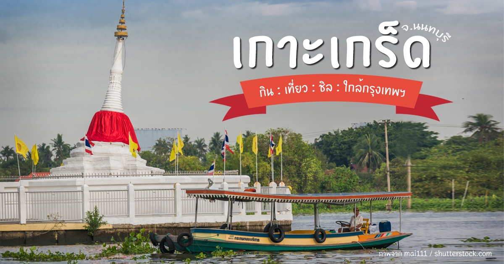

เกาะเกร็ด
การเดินทางไปเที่ยวบนเกาะเกร็ดมีหลายเส้นทาง เกาะเกร็ดเป็นเกาะที่ล้อมรอบด้วยแม่น้ำ นักท่องเที่ยวต้องไปลงเรือข้ามฟากเพื่อไปยังเกาะเกร็ด โดยท่าเรือลงได้ มี 4 ท่า ได้แก่ ท่าเรือวัดปรมัยยิกาวาส ท่าเรือป่าฝ้าย ท่าเรือวัดเสาธงทอง และท่าเรือวัดไผ่ล้อม ซึ่งท่าเรือที่ได้รับความนิยมอย่างมาก คือ ท่าเรือข้ามฟากอยู่ในวัดสนามเหนือ เป็นเรือโดยสารที่สามารถนำจักรยานหรือรถจักรยานยนต์ข้ามไปด้วยได้ ให้บริการระหว่าง 05.00-21.30 น. โดยแต่ละช่วงเวลาจะมีค่าโดยสารไม่เท่ากัน ดังนี้
⏰ เวลา 05.00-07.00 น. และ เวลา 18.00-21.30 น. ค่าโดยสาร คนละ 5 บาท
⏰ เวลา 07.00-18.00 น. ค่าโดยสาร คนละ 3 บาท
และสืบเนื่องจากศูนย์คลินิกเทคโนโลยีสถาบันวิจัยและพัฒนา มหาวิทยาลัยเทคโนโลยีราชมงคลพระนคร ลงพื้นที่ดำเนินโครงการพัฒนาผลิตภัณฑ์ผ้าบาติกและดอกไม้ใยบัว เพื่อยกระดับการท่องเที่ยวของชุมชนในตำบล เกาะเกร็ด จังหวัดนนทบุรี ประจำปีงบประมาณ พ.ศ. 2567 เพื่อเก็บรวบรวมข้อมูลที่ใช้ในการจัดทำสื่อประชาสัมพันธ์การท่องเที่ยวในตำบลเกาะเกร็ด อำเภอปากเกร็ด จังหวัดนนทบุรี ได้แก่ ข้อมูลชุมชน/กลุ่มชุมชน/ผู้ประกอบการ 9 กลุ่ม จะมีความน่าสนใจอย่างไรบ้าง เชิญรับชมได้เลยค่ะ